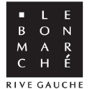

Publications & Travaux de Recherche

2025
Addendum I – Transition post‑NISQ
Rapport Technique • LVMH
Feuille de route cryptographique pour systèmes commerciaux face aux menaces quantiques. Analyse détaillée
des standards NIST (Kyber, Dilithium) et recommandations stratégiques d'implémentation.
📄 Lire l’addendum
(PDF)

2025
Rapport IT – Le Bon Marché
Audit Technique • LVMH
Audit d'interconnexion des modules SaaS et cartographie complète du Système d'Information. Identification
des flux critiques et optimisation de l'architecture pour une meilleure résilience.
📄 Lire le rapport
(PDF)

2024
Thèse L3 – Codage MDPC post-quantique
Thèse de Bachelor • Université Grenoble Alpes
Structure et sécurité post-NISQ des codes quasi-cycliques MDPC (Moderate Density Parity Check). Étude
approfondie des attaques par décodage itératif et des contre-mesures.
📄 Lire la thèse (PDF)
2024
Algebraic Framework for Characterization of Mixed States
Mémoire de Recherche • Université Grenoble Alpes
Algebraic Framework for Characterization of Mixed States in Quantum Computing Systems. Co-écrit
avec Alexandra Militan-Mocanu.
DOI: 10.5281/zenodo.16748188
📄 Lire en Ligne
DOI: 10.5281/zenodo.16748188